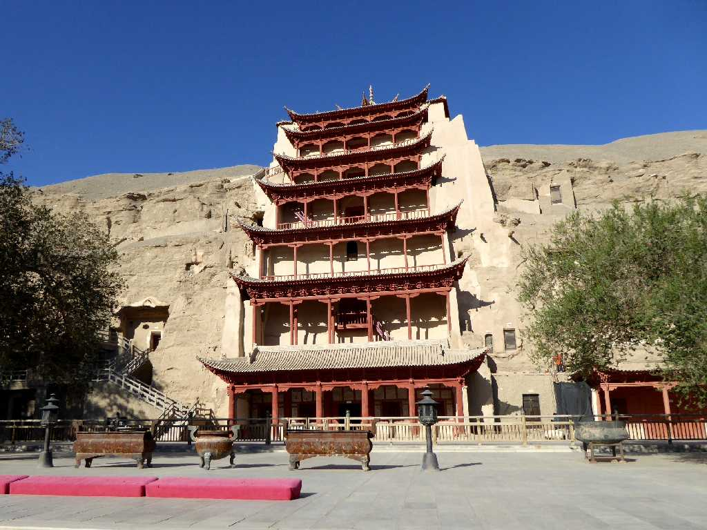
Cave 96 Mogao Caves Dunhuang 敦煌 莫高窟 第９６窟


莫高窟は幅１,６００ｍの絶壁に１,０００年間に渡り１,０００窟彫られたが現存する約７００窟のうち４９２窟に極彩色に彩られた４５,０００㎡の壁画と２,４１５体の塑像が保存されている
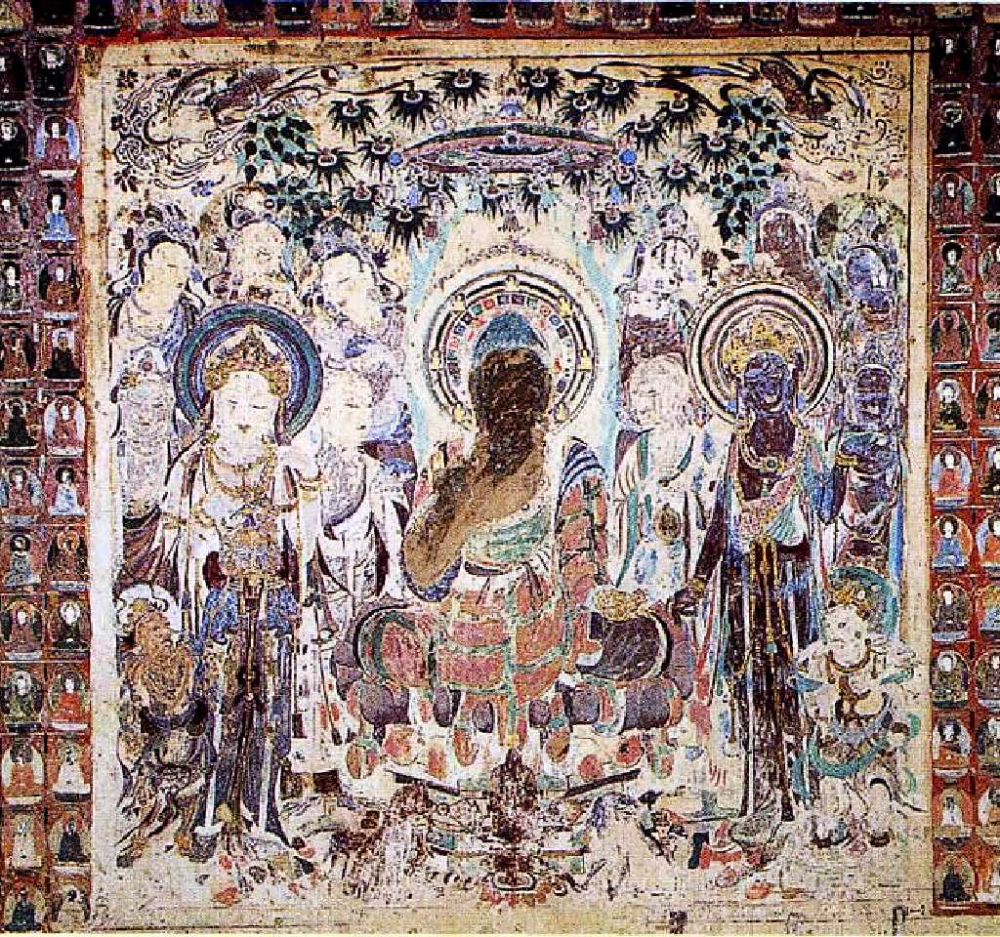
Cave 57 第５７窟


初唐(618-704) 樹下説法図 第５７窟は美人窟と云われ莫高窟で最も美しい菩薩に出会える
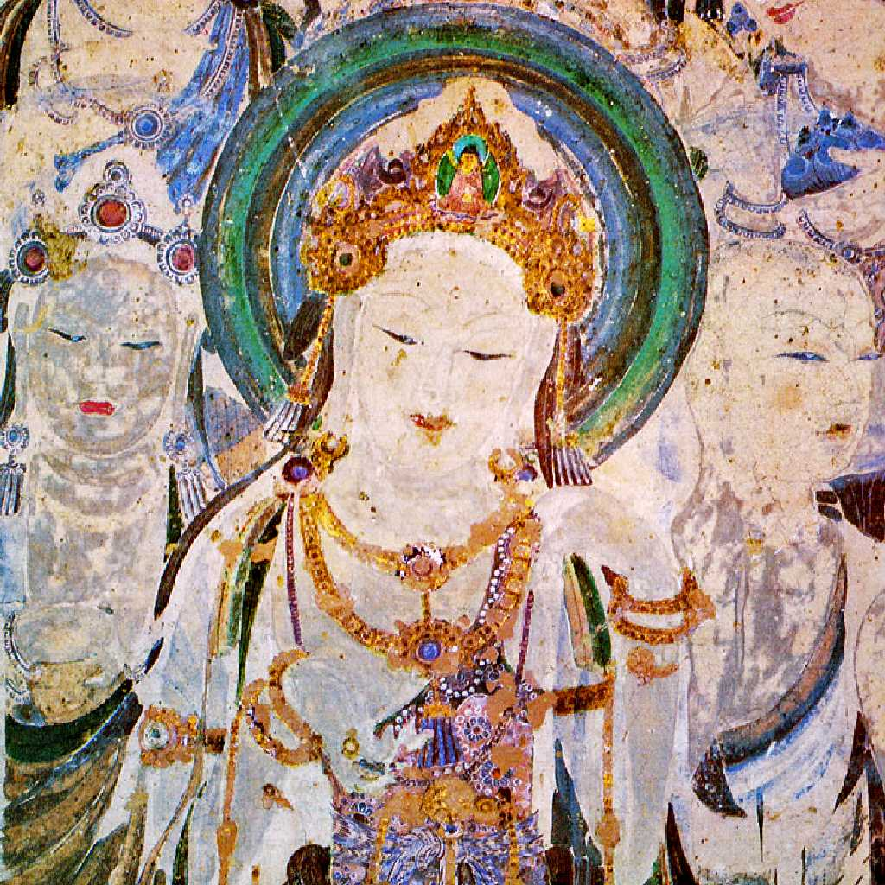
Cave 57 第５７窟
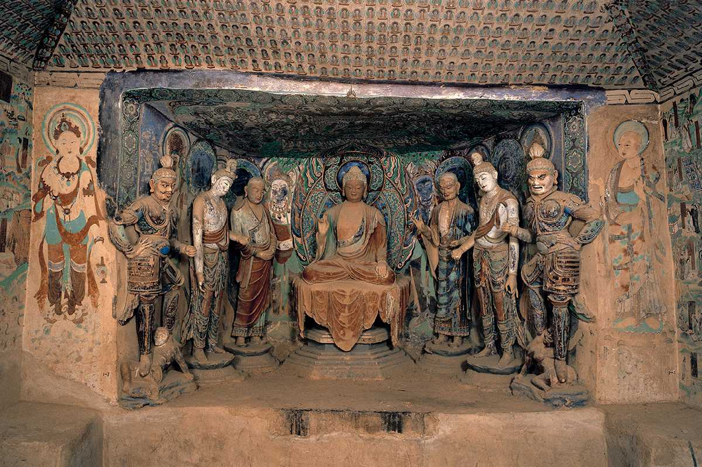
Cave 45 第４５窟


盛唐(705-781) 七尊像 左から 天王 脇侍菩薩 阿難 釈迦如来 迦葉 脇侍菩薩 天王
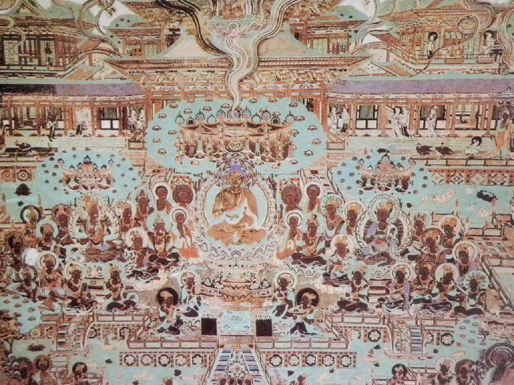
Cave 148 第１４８窟


觀無量壽經變

Cave 172 第１７２窟


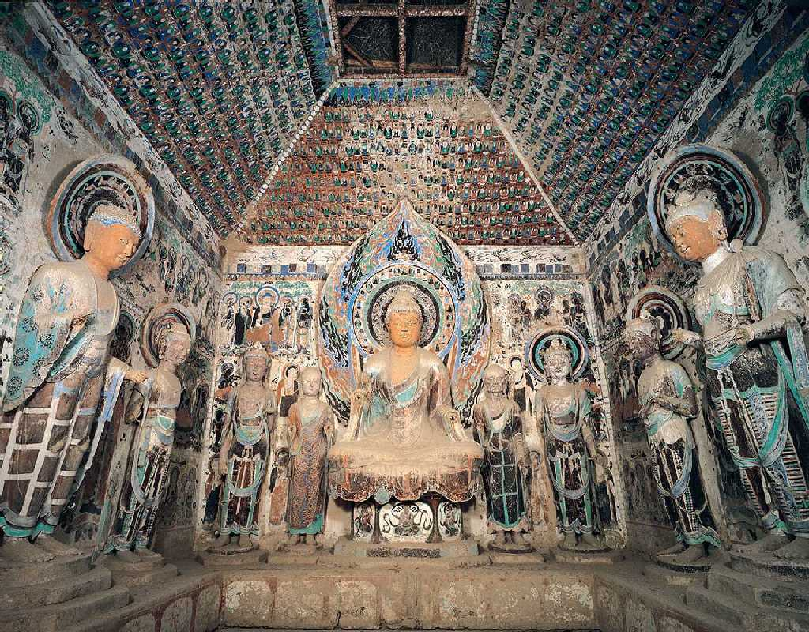
Cave 244 第２４４窟
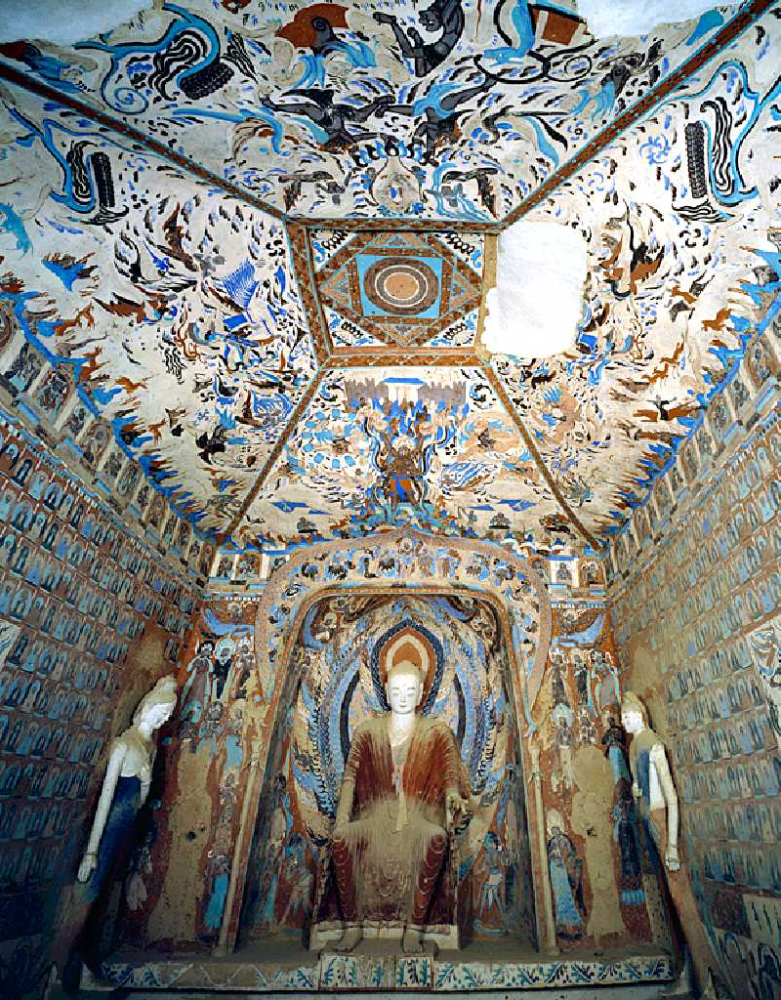
Cave 249 第２４９窟


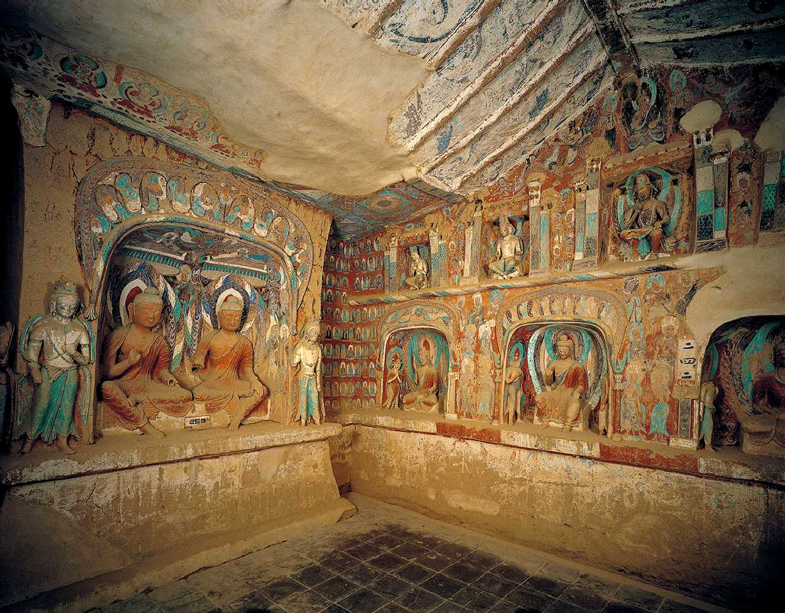
Cave 259 第２５９窟
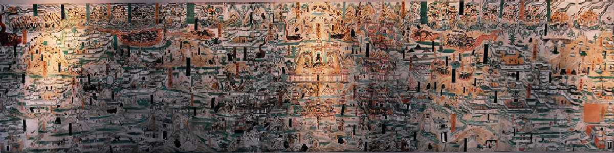
Cave 61 第６１窟


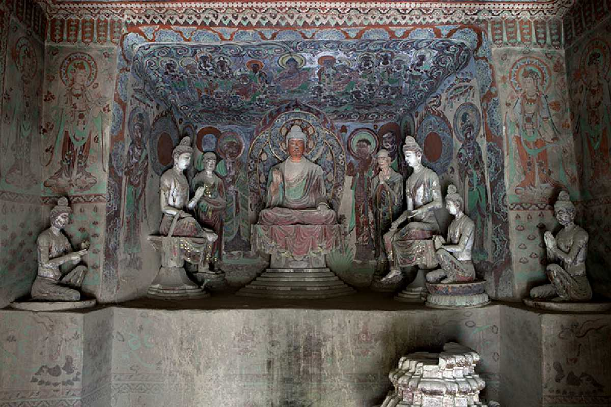
Cave 328 第３２８窟
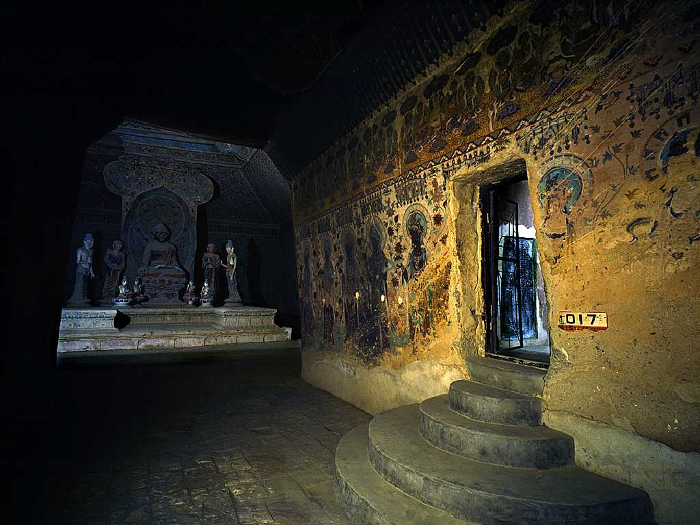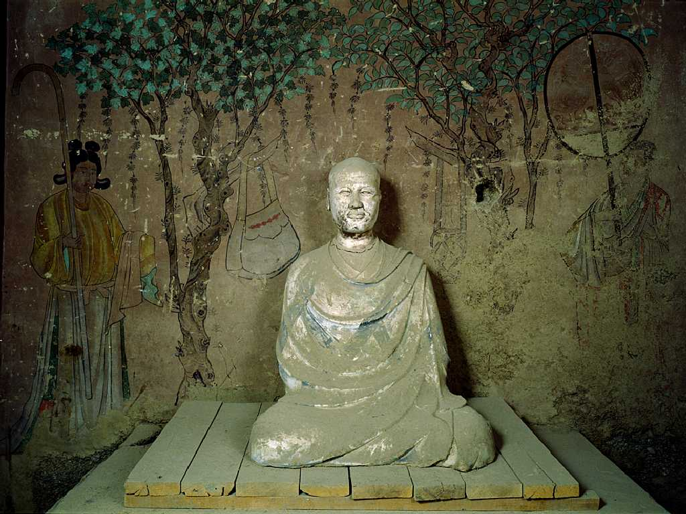
Cave 16 第１６窟
Cave 17 第１７窟


数万巻におよぶ敦煌文書が発見された第１６窟内の耳洞と云われる第１７窟
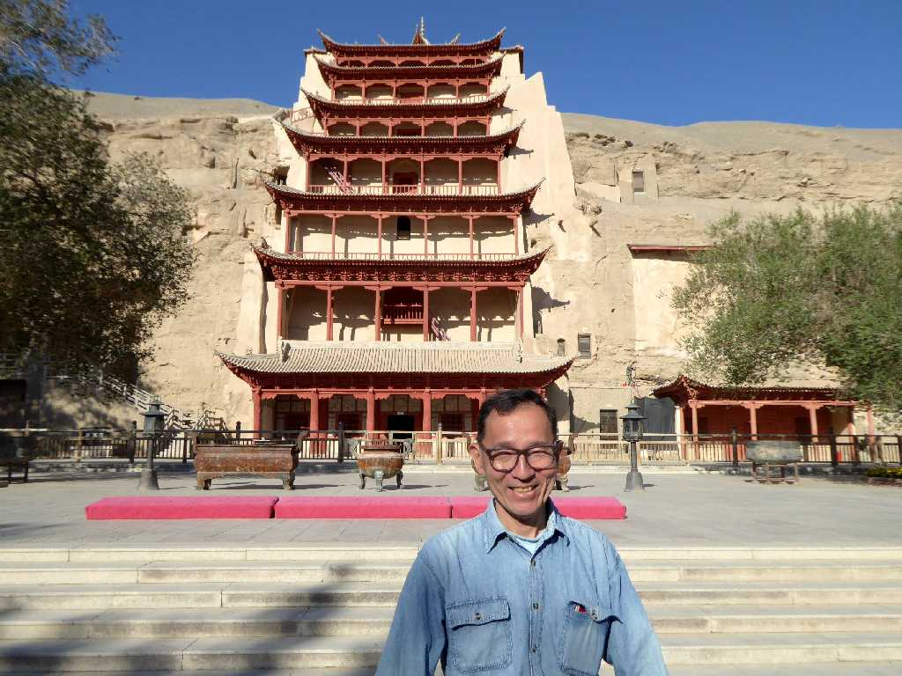
September 12 2015 Mogao Caves 莫高窟


仏教芸術の宝庫と云われ数多く保存されている極彩色の壁画と塑像に感動！
タクラマカン砂漠周遊の旅は東端のここ敦煌からシルクロード西域南道を通り西端のカラクリ湖を周り天山南路を通りウルムチまで約６,０００ｋｍを走る


 AI解説
AI解説